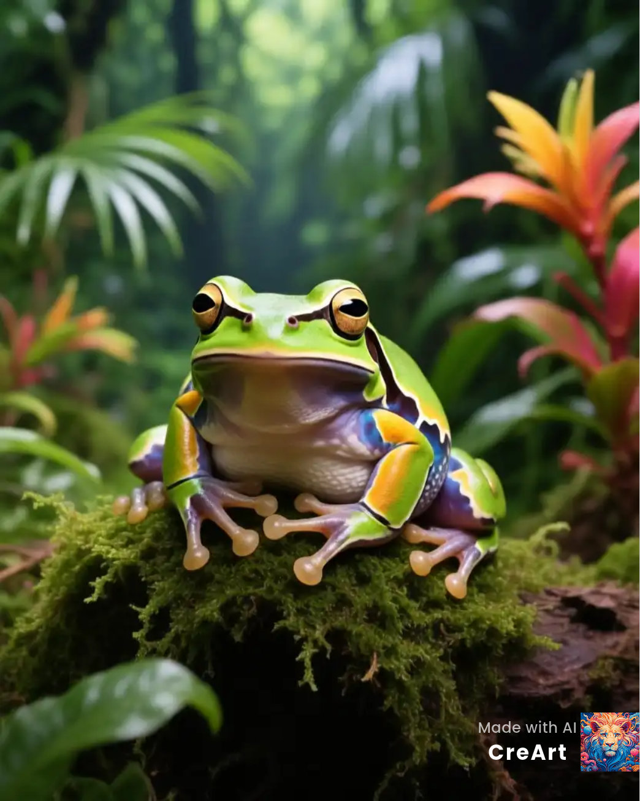

Allgemeine Informationen
Tropenfrösche sind oft bunt und klein, leben in Blättern, auf Bäumen oder in der Nähe von Wasser. Sie sind Teil des Regenwald-Ökosystems, in dem auch Faultiere leben.

Tropenfrösche sind oft bunt und klein, leben in Blättern, auf Bäumen oder in der Nähe von Wasser. Sie sind Teil des Regenwald-Ökosystems, in dem auch Faultiere leben.